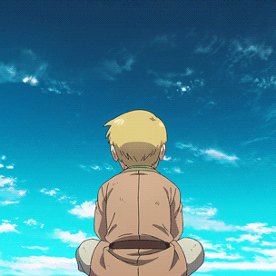
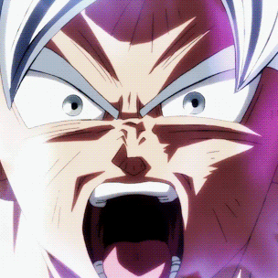
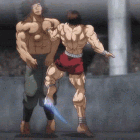
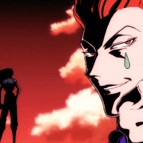

Thorfinn, a young Viking child, dreams of adventure and combat. Living on the peaceful island of Iceland, her life is turned upside down the day her father Thors, a former great war general, is called back to the battlefield...
vinland saga
Episodes : 24
season(s) : 2

They are extra-terrestrials who look like human beings. They come from the planet Vegeta. Natural-born fighters and belliocose, they are at the center of Dragon Ball's story.Their planet was destroyed by the monster Freeza...
Dragon ball z
Episodes : 444
season(s) : 3

The protagonist, Baki Hanma, trains with an intense focus to become strong enough to surpass his father, Yujiro Hanma, the strongest fighter in the world Five of the world's most violent and brutal death row inmates are gathering...
baki
Episodes : 12
season(s) : 1

The story focuses on a young boy named Gon Freecss who discovers that his father, who left him at a young age, is actually a world-renowned Hunter, a licensed professional who specializes in fantastical pursuits such as locating rare or...
hunter x hunter
Episodes : 148
season(s) : 1

uji Itadori, a kind-hearted teenager, joins his school's Occult Club for fun, but discovers that its members are actual sorcerers who can manipulate the energy between beings for their own use He hears about a cursed...
Jujutsu Kaisen
Episodes : 24
season(s) : 1